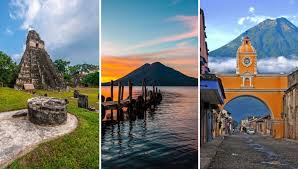

Lugares Turisticos
Inicio
Lugares turisticos
Cultura
Introducción
Guatemala es un país lleno de riqueza cultural, historia milenaria y paisajes naturales que cautivan a cualquier visitante. Desde las majestuosas ruinas mayas como Tikal, hasta la belleza incomparable del Lago de Atitlán, este destino ofrece experiencias únicas para todos los gustos. Sus coloridos pueblos, como Antigua Guatemala, combinan tradición y modernidad, mientras que sus volcanes, selvas y playas invitan a la aventura y al descanso. En esta página descubrirás los principales lugares turísticos del país, así como información útil para planificar tu viaje y aprovechar al máximo cada rincón de Guatemala. Prepárate para explorar un destino lleno de magia, cultura y naturaleza incomparable.
